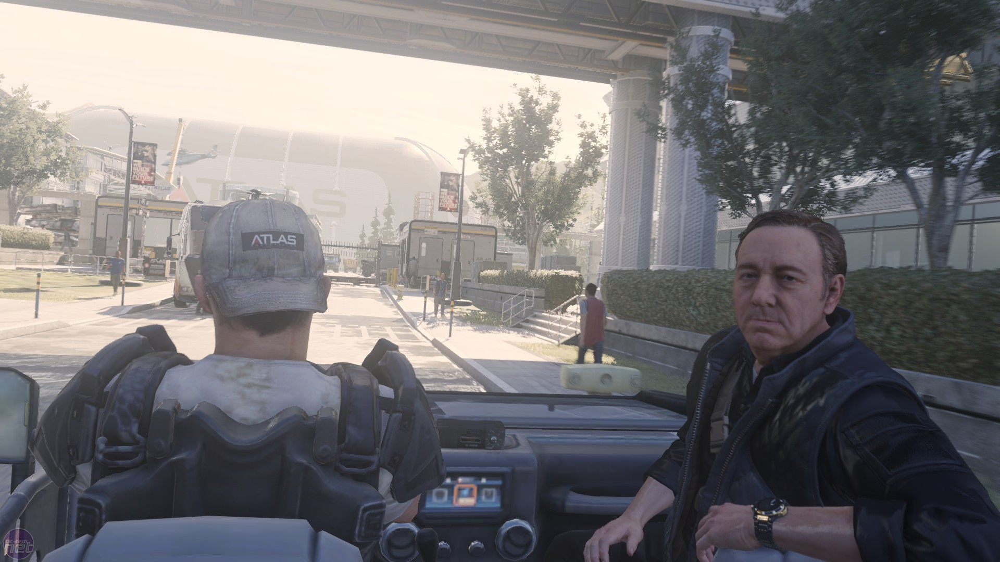

Combat Training
Irons then arrives to receive a report new Mitchell's training, to which Gideon responds, "He's getting there, sir." Irons remains optimistic about Mitchell, informing Gideon that Mitchell's a good soldier despite his setbacks in Korea. Irons then offers Mitchell a tour of the facility, giving Mitchell the rundown of Atlas' success and how they have become a freelance superpower. Irons then drops off Mitchell and Gideon at the R&D Lab to get Mitchell's arm recalibrated. After getting his arm fixed, Mitchell is brought to both the gun range and the grenade course to check out the recalibration of his arm, meeting fellow operative Ilona on the gun range where she'll comment on Mitchell's shooting if he beats her score. Mitchell is then brought back to the simulator, where he, Gideon and Joker manage to successfully complete the simulation and is congratulated by Irons, who informs Mitchell that he is ready for some real work.